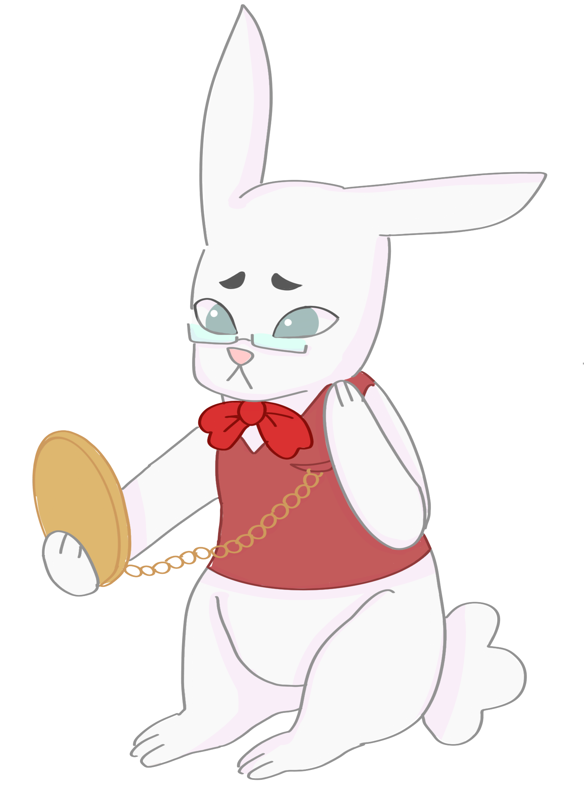

<html lang="en"></html>
<head>
    <meta charset="UTF-8">
    <meta name="viewport" content="width=device-width, initial-scale=1.0">
    <link rel="stylesheet" href="mask.css">
    <title>Mask</title>
</head>

<body>
    <header>
        MASK Technica
    </header>

        <div id="introThree">
            Welcome to Wonderland!
        </div>

        <div id="madSpeech" >
            “Oh, but you simply must run 5 miles! Why, it's the perfect number 
            - not too far and not too near. You see, if you only ran 4 miles, 
            you'd have missed an extra mile of delightful nonsense! And 6 miles, 
            well, that's just absurd. No, no, 5 is the proper amount for a proper 
            sort of journey. Imagine all the peculiar sights you-ll encounter on 
            your way! You never know what might appear when you travel precisely 
            5 miles - not a foot more, nor an inch less! And don't dawdle now! Why, 
            you're already late for the adventure waiting at mile three! Go on, go on! 
        </div>

            <div class="containerThree">
                <div class="imageThree">
                    
                </div>
                <div class="textThree">
                    <p>The time's ticking!”</p>
                </div>
            </div>

        <br>
            <button id="fiveMile">
                Run 5 miles!
            </button>


</body>


</html>